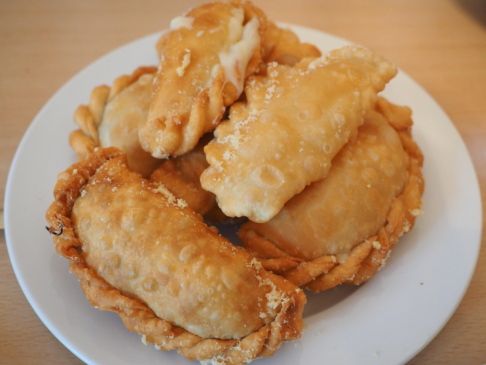

Cómo Preparar Empanadas

Ingredientes
- 2 tazas de harina de maíz precocida
- 2 ½ tazas de agua tibia
- 1 cucharadita de colorante
- ½ cucharadita de sal.
- 2 papas grandes
- 200 g de carne molida de res o cerdo
- ½ taza de cebolla larga picada
- 1 tomate maduro rallado o picado.
Pasos de Preparación
- En un bowl grande, mezcla la harina de maíz, la sal y el colorante.
- Agrega el agua tibia poco a poco y mezcla hasta formar una masa suave y manejable
- Cocina las papas en agua con sal hasta que estén blandas (unos 10 min). Tritura ligeramente con un tenedor.
- Agrega la carne molida, el tomate, el comino, la sal y la pimienta. Cocina hasta que la carne esté bien cocida.
- Mezcla la carne con la papa triturada y deja enfriar.
- Toma una porción de masa y forma una bolita del tamaño de una pelota de golf.
- Pon una cucharada de relleno en el centro y dóblala formando una media luna.
- Sella los bordes presionando con los dedos o usando un tenedor
- Calienta abundante aceite a 180°C (fuego medio-alto).
- Fríe las empanadas en tandas hasta que estén doradas y crujientes (aprox. 4-5 minutos).
- Retira y coloca sobre papel absorbente para eliminar el exceso de grasa.
Video de cómo hacer empanadas